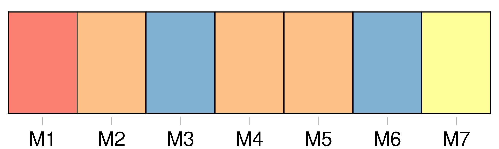
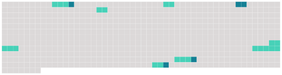

Longueur nb maillons : 12 mentions |
  |
Il s’ agissait de faire parvenir à La Porte [une lettre cachetée] [où] on lui marquait jusqu’ où il pouvait et devait aller dans ses déclarations. Elle remit [cette lettre] au chevalier en lui disant : « Voilà, monsieur, [ce] [que] la reine m’ a donné pour vous ; il faut employer votre adresse et votre crédit dans ce lieu -ci pour faire arriver [cette lettre] jusqu’ à ce prisonnier. [11 phrases] Sa chambre était de quatre étages au-dessus du cachot de La Porte ; il perça son plancher, et fit passer [la lettre de la reine] au bout d’ une corde, avec prière au prisonnier de la seconde chambre d’ en faire autant, puis successivement jusqu’ à la dernière où était La Porte, en recommandant bien le plus profond secret. C’ est ainsi que [la lettre de la reine] arriva parfaitement intacte aux mains du fidèle valet de chambre ; chose admirable, qu’ une manœuvre si difficile, si compliquée, et qui dura plusieurs nuits, se soit accomplie sans qu’ aucun des geôliers ait pu s’ en apercevoir, et sans qu’ aucun de ceux qui y prirent part l’ ait compromise par la moindre indiscrétion, en sorte que ce prisonnier si bien gardé, dans un cachot et derrière des portes de fer, reçut [une instruction détaillée] [qui] le mit en état de se justifier lui -même et de justifier sa maîtresse.
La fermeté qu’ avait d’ abord montrée La Porte eût tourné contre la reine, si à la fin elle n’ eût été éclairée et guidée par [la lettre] [qui] parvint jusqu’ à lui, grâce à la courageuse industrie du chevalier de Jars, dont le dévouement était dû à celui de Mlle de Hautefort. |
 |
La ressource peut être téléchargée sur la page Ortolang
Si vous avez des questions ou vous voyez des erreurs, merci d'envoyer un mail à silvia.federzoni89@gmail.com
Site développé par S. Federzoni (contact)